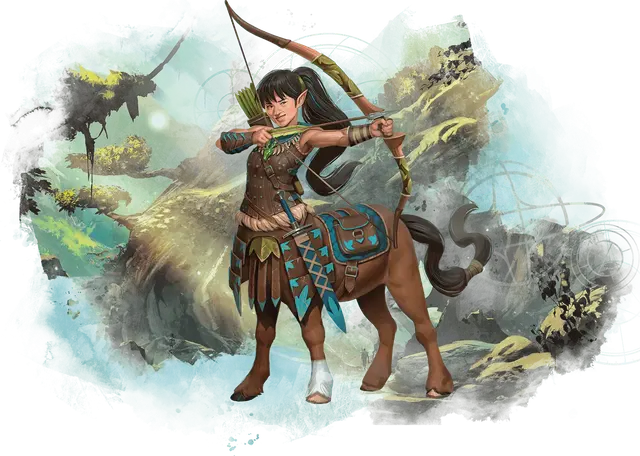

Кентавр
Centaur

Кентавры скачут по всей мультивселенной и берут свое начало во многих различных мирах. Представленные здесь кентавры родом из Царства Фей и мистическим образом перекликаются с миром природы. От талии и выше они напоминают эльфов, демонстрируя все эльфийские разновидности оттенка кожи. Ниже пояса у них лошадиное тело.
ОСОБЕННОСТИ кентавра
Вы обладаете следующими особенностями.
Увеличение характеристик. Либо значение одной характеристики по вашему выбору увеличивается на 2, а другой — на 1, либо значение трёх различных характеристик по вашему выбору увеличивается на 1.
Вид существа. Вы — Фея.
Размер. Ваш размер — Средний.
Скорость. Ваша базовая скорость ходьбы — 40 футов.
Разбег. Если вы двигаетесь по крайней мере на 30 футов по направлению к цели, а затем попадаете по ней рукопашной атакой оружием в этом же ходу, то вы можете мгновенно совершить одну атаку бонусным действием, эта атака совершается вашими копытами.
Лошадиное телосложение. Вы считаетесь на один размер больше когда определяется ваша грузоподъёмность и вес, который вы можете толкать или тянуть.
Кроме того, любое лазание, требующий рук и ног, особенно трудно для вас из-за ваших лошадиных ног. Когда вы совершаете такое лазание, каждый фут движения стоит вам 4 дополнительных фута, вместо обычного 1 дополнительного фута.
Копыта. У вас есть копыта, которые вы можете использовать для совершения безоружных ударов. Когда вы атакуете ими, вы наносите дробящий урон, равный 1к6 + ваш модификатор Силы, вместо обычного дробящего урона для безоружного удара.
Близость с природой. Ваша мистическая связь с природой даёт вам интуитивную связь с миром природы и животными в нём. Вы получаете владение одним из следующих навыков по вашему выбору: Уход за животными, Медицина, Природа или Выживание.
Языки. Ваш персонаж может говорить, читать и писать на Общем и еще одном языке, который по вашему мнению подходит для персонажа.